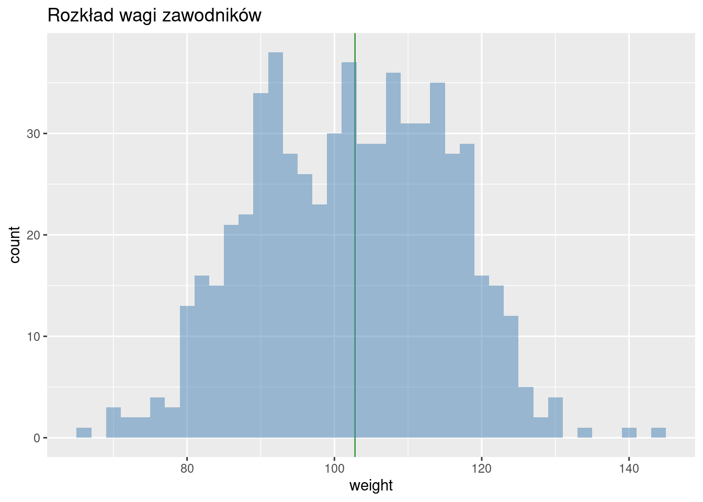
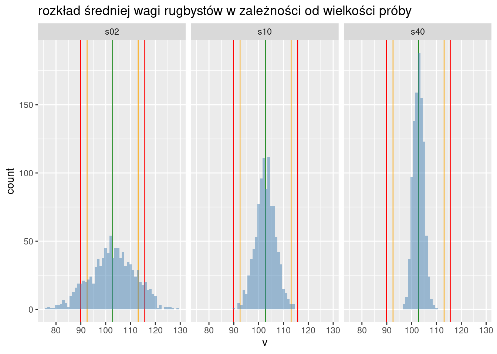
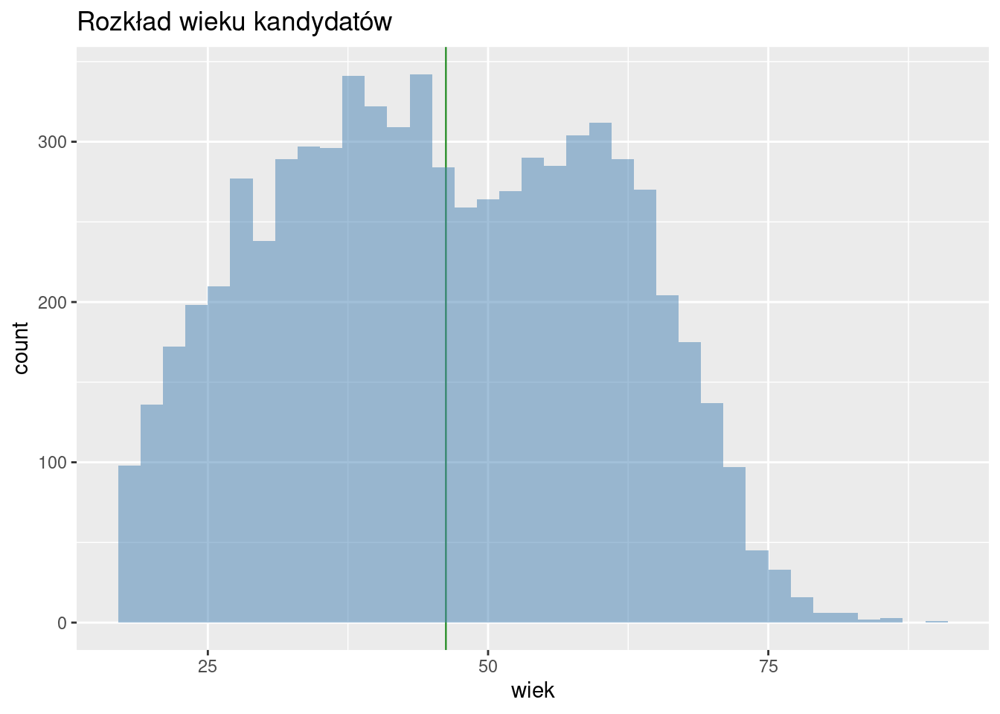
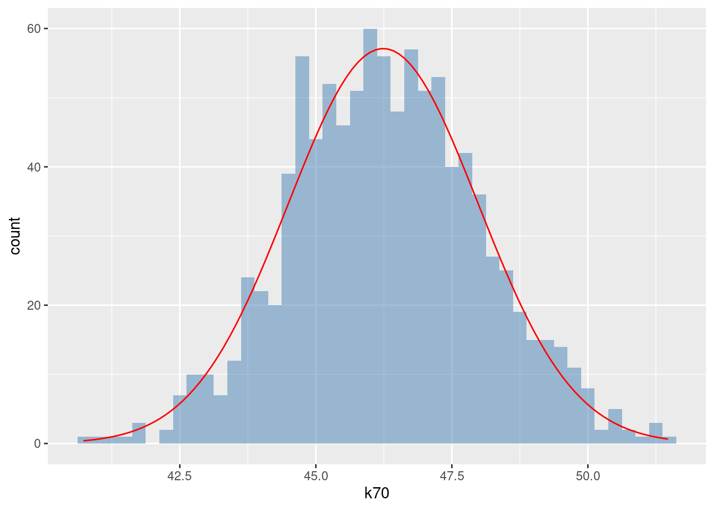
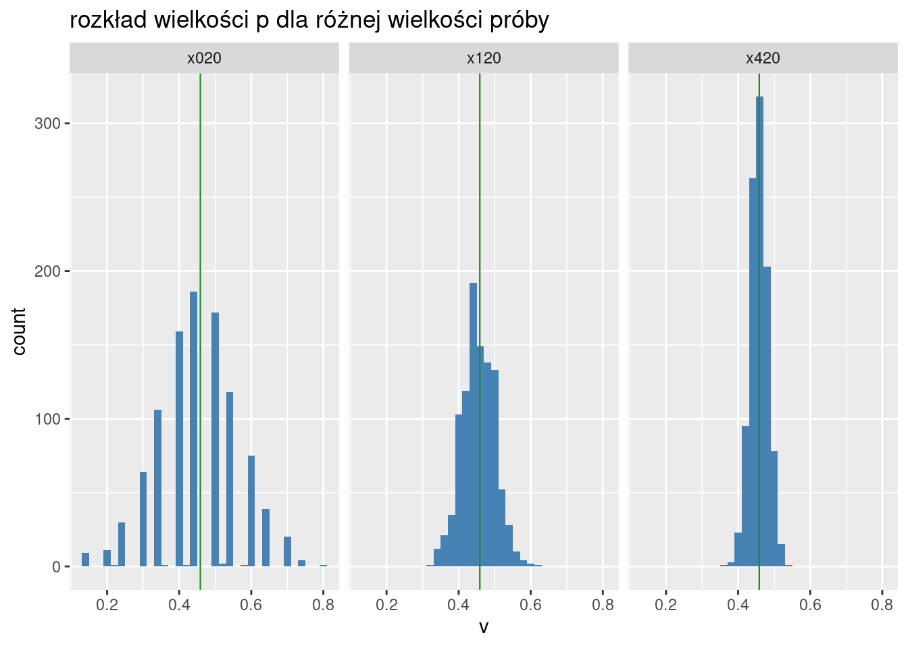

3 Łagodne wprowadzenie do wnioskowanie statystycznego
Chcemy się dowiedzieć czegoś na temat populacji (całości) na podstawie próby (części tej całości).
Przykładowo chcemy ocenić ile wynosi średnia waga główki kapusty na 100 h polu. Można ściąć wszystkie i zważyć, ale można też ściąć trochę (pobrać próbę się mówi uczenie) zważyć i poznać średnią na całym polu z dobrą dokładnością.
3.1 Przykładowy problem nr 1
W turnieju o Puchar Świata w rugby w 2015 roku uczestniczyło 623 rugbystów. Znamy szczegółowe dane odnośnie wzrostu i wagi każdego uczestnika turnieju. Obliczamy (prawdziwą) średnią, odchylenie standardowe i współczynnik zmienności masy ciała:
## Min. 1st Qu. Median Mean 3rd Qu. Max.
## 65.0 93.0 103.0 102.8 113.0 145.0Czyli średnio rugbysta na turnieju RWC’2015 ważył
102.80 kg (Mean na wydruku powyżej)
a odchylenie standardowe (s) wyniosło 12.92 kg.
Wykres (rozkład jest dwumodalny; bo w rugby są dwie grupy zawodników, wcale nie wszyscy > 110 kg):

Szacujemy średnią na podstawie 2 zawodników pobranych losowo
Powtarzamy eksperyment 1000 razy (dwóch bo dla jednego nie obliczmy wariancji)
## Min. 1st Qu. Median Mean 3rd Qu. Max.
## 75.5 97.0 103.0 102.9 109.0 129.5średnia (średnich z próby) ma wartość 102.89 a odchylenie standardowe 9.11. Wartość \(s/\sqrt{2}\) (odchylenie standardowe podzielone przez pierwiastek kwadratowy z liczebności próby) jest równa 9.14. Zauważmy że ta wartość jest zbliżona do odchylenia standardowego uzyskanego w eksperymencie (9.11 vs 9.14)
szacujemy średnią na podstawie 10 zawodników pobranych losowo
Powtarzamy eksperyment 1000 razy
## Min. 1st Qu. Median Mean 3rd Qu. Max.
## 89.8 100.4 102.8 102.8 105.5 114.4średnia wyszła 102.84 a odchylenie standardowe 3.97. Wartość \(s/\sqrt{10}\) jest równa 4.09.
szacujemy średnią na podstawie 40 zawodników pobranych losowo
Uwaga: 40 zawodników to około 6.4% całego zbioru. Powtarzamy eksperyment 1000 razy
## Min. 1st Qu. Median Mean 3rd Qu. Max.
## 96.62 101.32 102.80 102.80 104.25 109.83średnia jest równa 102.8 a odchylenie standardowe 2.07. Wartość \(s/\sqrt{40}\) jest równa 2.04.
Wykres
Podsumujmy eksperyment wykresem rozkładu wartości średnich.

Wnioski z eksperymentu
Wartość średnią wyznaczamy na podstawie jakiejś konkretnej metody. Wydaje się na podstawie powyższych eksperymentów, że z dobrym skutkiem możemy jako metodę wykorzystać średnią-z-próby.
W ogólności taką metodą, która formalnie jest funkcją elementów z próby, nazywa się w statystyce estymatorem. Warto to pojęcie zapamiętać. Wnioskujemy o wartości parametru w populacji posługując się estymatorem.
Kontynuując wnioski z eksperymentu należy zauważyć, że wszystkie średnie-ze-średnich (bez względu na liczebność próby) są zbliżone do wartości prawdziwej (to się nazywa nieobciążoność estymatora); Mówiąc innymi słowy jeżeli będziemy oceniać wartość prawdziwej średniej na podstawie próby, a naszą ocenę powtórzymy wielokrotnie, to średnia będzie zbliżona do wartości prawdziwej (a nie np. niższa czy wyższa) Ta cecha jest niezależna od wielkości próby.
Jeżeli rośnie liczebność próby to zmienność wartości średniej-w-próbie maleje, co za tym idzie prawdopodobieństwo, że wartość oceniona na podstawie średniej z próby będzie zbliżona do wartości szacowanego parametru rośnie (to się nazywa zgodność). Co więcej dobrym przybliżeniem zmienności średniej-w-próbie jest prosta formuła \(s/\sqrt{n}\) gdzie \(n\) jest liczebnością próby a \(s\) jest odchyleniem standardowym w populacji z której pobrano próbę.
Jeżeli mamy dwa rózne estymatory służące do oszacowania parametru, oba są nieobciążone oraz zgodne, to który wybrać? Ten która ma mniejszą wariancję. Taki estymator nazywa się efektywny.
Estymator zatem powinien być nieobciążony, zgodny oraz efektywny (czyli mieć małą wariancję). Można matematycznie udowodnić, że pewien estymator ma tak małą wariancję, że niemożliwe jest wynalezienie czegoś jeszcze bardziej efektywnego. Takim estymatorem średniej w populacji jest średnia z próby…
Konkretną wartość estymatora dla konkretnych wartości próby nazywamy oceną (parametru)
3.2 Przykładowy problem nr 2
W wyborach samorządowychych w Polsce w roku 2018 o mandat radnego sejmików wojewódzkich ubiegało się 7076 kandydatów. Znamy szczegółowe dane odnośnie wieku każdego kandydata, bo to zostało publicznie podane przez Państwową Komisję Wyborczą. Obliczamy (prawdziwą) średnią, odchylenie standardowe i współczynnik zmienności wieku kandydatów:
## Min. 1st Qu. Median Mean 3rd Qu. Max.
## 18.00 34.00 46.00 46.24 58.00 91.00Czyli średnio kandydat miał 46.24 lat a odchylenie standardowe wieku wyniosło 14.61 lat.
Wykres (rozkład znowu jest dwumodalny z jakiś powodów):

Szacujemy średnią na podstawie 2 kandydatów pobranych losowo
Powtarzamy eksperyment 1000 razy
## Min. 1st Qu. Median Mean 3rd Qu. Max.
## 21.00 38.50 46.25 46.38 54.00 78.00Średnia średnich z próby ma wartość 46.38 lat. Odchylenie standardowe wyniosło 10.6. Wartość \(s/\sqrt{2}\) jest równa 10.33.
Szacujemy średnią na podstawie 10 kandydatów pobranych losowo
Powtarzamy eksperyment 1000 razy.
## Min. 1st Qu. Median Mean 3rd Qu. Max.
## 32.40 42.88 46.00 46.05 49.20 59.10Średnia średnich z próby ma wartość 46.05 lat. Odchylenie standardowe wyniosło 4.47. Wartość \(s/\sqrt{10}\) jest równa 4.62.
Szacujemy średnią na podstawie 40 kandydatów pobranych losowo
Uwaga: 40 kandydatów to ok 0.6% całości. Powtarzamy eksperyment 1000 razy.
## Min. 1st Qu. Median Mean 3rd Qu. Max.
## 39.55 44.69 46.20 46.19 47.80 52.75Średnia średnich z próby ma wartość 46.19 lat. Odchylenie standardowe wyniosło 2.3126115. Wartość \(s/\sqrt{40}\) jest równa 2.3105373.
Szacujemy średnią na podstawie 70 kandydatów pobranych losowo
Uwaga: 70 kandydatów to około ok 1% całości (1000 powtórzeń)
## Min. 1st Qu. Median Mean 3rd Qu. Max.
## 40.73 45.04 46.27 46.31 47.50 51.47Średnia średnich z próby ma wartość 46.31 lat. Odchylenie standardowe wyniosło 1.7501862 Wartość \(s/\sqrt{70}\) jest równa 1.746602.
Wykres
Podsumujmy eksperyment wykresem rozkładu wartości średnich.

Obserwujemy to samo co w przypadku wagi rugbystów: im większa próba tym dokładniejsza wartość średniej wieku. Bez względu na wielkość próby przeciętnie otrzymujemy prawdziwą wartość średniej.
Wniosek: precyzja wnioskowania zwiększa się wraz z liczebnością próby; tym szybciej im rozproszenie w populacji generalnej jest mniejsze. Żeby z dużą dokładnością wnioskować o średniej dla dużej populacji wcale nie trzeba pobierać dużej próby (w ostatnim przykładzie było to 1% całości).
3.3 Rozkład normalny
Rozkład empiryczny zmiennej to przyporządkowanie kolejnym wartościom zmiennej odpowiadających im liczebności.
Załóżmy że istnieje zapotrzebowanie społeczne na wiedzę na temat wieku kandydatów na radnych. Możemy to jak widać łatwo liczyć ale jednocześnie jest to kłopotliwe. Należy do tego mieć zbiór ponad 7 tys liczb. Rozkład teoretyczny to matematyczne uogólnienie rozkładu empirycznego. Jest to model matematyczny operujący pojęciem (ściśle sformalizowanym) prawdopodobieństwa (zamiast liczebności). Rozkład teoretyczny jest:
zbliżony do empirycznego jeżeli chodzi o wyniki (jest przybliżeniem empirycznego)
jest zdefiniowany za pomocą kilku liczb; nie ma potrzeby korzystania z liczebności
Żeby było ciekawiej istnieje dokładnie jeden rozkład teoretyczny, który z dobrą dokładnością opisuje rozkłady empiryczne będące wynikiem powyższej zabawy. Ten rozkład (zwany normalnym) zależy tylko od dwóch parametrów: średniej i odchylenia standardowego, gdzie średnia będzie równa (prawdziwej) średniej w populacji a odchylenie standardowe równe odchyleniu standardowemu w populacji podzielonemu przez pierwiastek z wielkości próby.
Dla próby 40-elementowej (wiek kandydatów) wygląda to tak:

dla próby 70-elementowej tak:

Prawda, że wynik jest całkiem dobry? Teoretyczność czerwonej krzywej polega na tym, że ona zawsze będzie identyczna, podczas gdy histogram będzie różny. Gdybyśmy powtórzyli nasz eksperyment (generowania 1000 losowych prób przypominam), to zapewne trochę by się różnił, bo byśmy wylosowali inne wartości do prób. Ta teoretyczna abstrakcja nazywa się prawdopodobieństwem. Rzucając monetą 1000 razy spodziewamy się po 500 orłów i reszek, co w modelu matematycznym będzie opisane jak: prawdopodobieństwo wyrzucenia orła wynosi 0,5. Rzucanie monetą to bardzo prosty eksperyment; nasz z liczeniem średniej wieku jest bardziej skomplikowany więc miło jest się dowiedzieć, że używając czerwonej krzywej można łatwo obliczyć jak bardzo prawdopodobne jest na przykład popełnienie błędu większego niż 10% średniej, albo większego niż 0,1 lat. Albo jak duża powinna być próba żeby ten błąd był nie większy niż 0,1 lat.
Interpretacja wartości rozkładu empirycznego zwykle jest w kategoriach ryzyka/szansy czy prawdopodobieństwa. Przykładowo interesuje nas prawdopodobieństwo, że kandydat ma mniej niż 30 lat. Takich kandydatów jest 1091 a wszystkich kandydatów dla przypomnienia jest 7076. Iloraz tych wartości będzie interpretowany jako ryzyko/szansa/prawdopodobieństwo (wynosi ono 15.42%.)
Podobnie można obliczyć prawdopodobieństwo, że wiek kandydata będzie się zawierał w przedziale 50–60 lat. Ponieważ kandydatów w wieku 50–60 lat jest 1570, to szukane prawdopodobieństwo jest równe: 22.19%.)
Jeżeli zamiast rozkładu empirycznego będziemy używać rozkład normalnego, który jak widzimy jest jego dobrym przybliżeniem, to nie musimy liczyć empirycznych liczebności. Wystarczy że znamy średnią i odchylenie standardowe a potrafimy obliczyć każde prawdopodobieństwo dla każdego przedziału wartości zmiennej.
W szczególności dla rozkładu normalnego prawdopodobieństwo \(m \pm s\) (przyjęcie wartości z przedziału średnia plus/minus odchylenie standardowe) wynosi około 0,68 prawdopodobieństwo \(m \pm 2 \times s\) wynosi około 0,95 a \(m \pm 3 \times s\) około 0,997. Czyli w przedziale \([-3s < m, m +3s]\) znajdują się praktycznie wszystkie wartości rozkładu. Albo innymi słowy przyjęcie wartości spoza przedziału średnia plus/minus trzykrotność odchylenia standardowego jest bardzo mało prawdopodobna.
Rozkład normalny będzie identyczny dla wagi rugbystów, wieku czy czasu opóźnień. Uogólnieniem teoretycznym pojęcia zmiennej statystycznej, które do tej pory używaliśmy jest zmienna losowa, zmienna której wartości są liczbami a realizują się z określonym prawdopodobieństwem np. określonym przez rozkład normalny.
Przykład: szacowanie odsetka kobiet
Dane dotyczące kandydatów zawierają także płeć. Ktoś może być ciekaw
jaki był odsetek kobiet w tej grupie. Taki parametr nazywa się proporcją
albo ryzykiem, a potocznie i niefachowo procentem.
Matematycznym modelem jest zmienna dwuwartościowa, która
z określonym prawdopodobieństwem przyjmuje wartość kobieta.
Obliczmy
empiryczną wartość tego prawdopodobieństwa jako liczbę kobiet do liczby
wszystkich kandydatów. Wartość tego parametru wynosi 0.4587337 (albo
45.87%).
Potraktujmy to jako prawdziwą wartość prawdopodobieństwa (p), że
kandydat jest kobietą i empirycznie sprawdźmy czy możemy szacować
o prawdziwej wartości tego parametru
używając (jako estymatora żeby się przyzwyczajać do nowych terminów) proporcji z próby.
Tradycyjnie powtarzamy eksperyment 1000 razy
dla trzech różnych wielkości próby. Rozkład otrzymanych wartości przedstawia rysunek.

Wnioski:
Dla próby 20 elementowej rozkład nie przypomina rozkładu normalnego
Dla prób 120 i 420 elementowej rozkład jest podobny do normalnego
Zmienność estymatora maleje wraz ze wzrostem liczebności próby; każe nam to przypuszczać (i tak jest w istocie) że jest on zgodny
W każdym przypadku średnia z 1000 eksperymentów jest zbliżona do wartości prawdziwej każe nam to przypuszczać (i tak jest w istocie) że estymator jest nieobciążony
Rozkład normalny jest tak magiczny że nawet jeżeli zmienna której parametr szacujemy nie ma rozkładu zbliżonego do normalnego (jak w przypadku zmiennej która przyjmuje tylko dwie wartości) to i tak estymator tego parametru będzie normalny. Co najwyżej będziemy potrzebowali większej próby żeby znormalniał (jak w opisywanym przykładzie)
3.4 Wnioskowanie statystyczne (interferance)
Analizując dane uzyskane z próby celem jest ich uogólnienie na całą populację. Przypominamy, że wnioskujemy o wartości parametru w populacji posługując się estymatorem. W przypadku wnioskowania o średniej estymatorem jest średnia-z-próby. Dobrze by było wiedzieć jak bardzo wiarygodna jest ta wartość (zwana oceną parametru) uzyskana na podstawie konkretnego estymatora, inaczej mówiąc jak dużo mogliśmy się pomylić.
Do oceny tej wiarygodności można użyć wariancji-średniej-z-próby (która nazywa się wariancją błędu albo error variance) Jeżeli wariancja błędu jest duża, to w pojedynczej próbie mogą wystąpić wartości znacznie różniące się od prawdziwej średniej; jeżeli jest mała to takie bardzo różniące się od prawdziwej średniej wartości mają małe szanse na zaistnienie. Do tego w przypadku rozkładu normalnego wiemy ze wariancja błędu jest równa \(s^2/n\) (gdzie \(s^2\) jest wariancją w populacji a \(n\) wielkością próby.)
W ramach wnioskowania stosowane są trzy metody (podejścia):
Estymacja punktowa,
Estymacja przedziałowa,
Testowanie hipotez.
3.4.1 Estymacja punktowa
Szacujemy średnią (inny parametr) i tę wartość uznajemy za wartość prawdziwą; dokładność szacunku jest nieokreślona. Inaczej mówiąc wartość estymatora dla konkretnej próby przyjmujemy za ocenę parametru.
Estymatorem punktowym średniej jest średnia z próby a estymatorem punktowym proporcji/ryzyka jest proporcja/ryzyko z próby.
3.4.2 Estymacja przedziałowa
Nie można ustalić prawdopodobieństwa popełnienia błędu dla dokładnej wartości parametru (co wynika z właściwości matematycznych modelu), ale można dla dowolnego przedziału od–do.
Czyli nie można ustalić, że z prawdopodobieństwem 95% oszacujemy wartość średnią czegoś jako 5,000000, ale można z prawdopodobieństwem 95% oszacować przedział w którym znajdzie się średnia (np że będzie to na przykład 4,9–5,1).
Estymacja przedziałowa to oszacowanie przedziału wartości od–do, który z zadanym z góry prawdopodobieństwem zawiera prawdziwą wartość średniej.
Z góry wyznaczone prawdopodobieństwo nazywa się poziomem ufności (określa jak często mamy się NIE rąbnąć)
3.4.3 Testowanie hipotez
Większość analiz statystycznych polega na porównaniu. W wyniku tego porównania otrzymujemy liczbę. Załóżmy, że mamy dwie próby dotyczące wieku kandydatów na radnych do sejmików wojewódzkich z roku 2018 (średnia 46,1) oraz z roku 2014 (47,2). Różnica wynosi 1,1 lat i może być spowodowana błędem przypadkowym (tj. gdybyśmy wylosowali jeszcze raz dwie próby, to wynik byłby zupełnie odmienny np 46,9 vs 46,5) i/lub wynikać z tego że faktycznie w roku 2014 kandydaci byli starsi.
Formalnie stawiamy hipotezę, że różnica średnich wynosi zero. Jest to tzw. hipoteza zerowa. Niezbędne jest także postawienie hipotezy alternatywnej, którą może być proste zaprzeczenie zerowej. Zapisuje się to następująco:
\(H_0\): różnica średnich wieku wynosi zero (\(m_1 = m_2\))
\(H_1\): różnica średnich wieku jest różna od zera (\(m_1 \not= m_2\))
Hipotezy sprawdzamy wykorzystując test statystyczny czyli funkcję której wartości zależą wartości testowanych parametrów (w tym przypadku \(m_1\) oraz \(m_2\))
Nie jest chyba wielkim zaskoczeniem, że testem dla różnicy średnich jest różnica średnich w próbie. Całkiem zdroworozsądkowo możemy przyjąć, że duże różnice świadczą na rzecz hipotezy alternatywnej a małe na rzecz hipotezy zerowej.
Duża różnica pomiędzy hipotezą a wynikiem z próby może wynikać z tego, że
pechowo trafiła nam się nietypowa próba, który zdarza się rzadko (rozkład normalny)
hipoteza jest fałszywa, średnie mają inną wartość niż zakładamy w hipotezie zerowej
Statystyk zawsze wybierze drugą wersję. Pozostaje tylko ustalić (dla statystyka) co to jest rzadko?
Rzadko to z prawdopodobieństwem mniejszym niż z góry ustalone prawdopodobieństwo otrzymania różnicy (zakładające że hipoteza zerowa jest prawdziwa), którą otrzymaliśmy w próbie lub większej (coś jak założenie że zrealizował się najlepszy z najgorszych scenariuszy).
Przyjmijmy przykładowo że prawdopodobieństwo wystąpienia różnicy 1,1 lat (i większej) oszacowane na podstawie odpowiedniego modelu matematycznego (rozkład normalny) wynosi 0,3 co znaczy że coś takiego zdarza się względnie często – trzy razy na 10 pobranych prób.
Załóżmy z kolei że, ta różnica wyniosła 3,2 lata. Prawdopodobieństwo wystąpienia takiej różnicy (i większej) wynosi 0,009 co znaczy że coś takiego zdarza się względnie rzadko – 9 razy na tysiąc prób.
Przyjmując, że możemy się mylić 5 razy na 100 w pierwszym przypadku statystyk powie, że nie ma podstaw do odrzucenia hipotezy \(H_0\). Różnica 1,1 lat wynika z przypadku. W drugim wypadku powie że hipoteza jest fałszywa, bo zdarzyło się coś co nie powinno się zdarzyć.
Prawdopodobieństwo ,,graniczne’’ ustalamy z góry i nazywa się ono poziomem istotności. Określa ono jak często możemy się rąbnąć odrzucając hipotezę zerową która jest prawdziwa.
Ale jest jeszcze drugi przypadek popełnienia błędu: przyjmujemy hipotezę która jest fałszywa. W testach statystycznych nie określa się tego prawdopodobieństwa a w związku z tym nie można przyjąć hipotezy zerowej (bo nie znamy ryzyka popełnienia błędu).
W konsekwencji hipotezę zerową albo się odrzuca albo nie ma podstaw do odrzucenia. Wniosek cokolwiek niekonkluzywny, ale tak jest.
Dlatego też często ,,opłaca się’’ odrzucić hipotezę zerową, bo taki rezultat jest ,,bardziej konkretny’’.
3.4.4 Testy nieparametryczne
Można testować hipotezy nt. wartości parametrów ale można też testować przypuszczenia o charakterze mniej konkretnym. Na przykład, że dwie zmienne są niezależne (co to znaczy wyjaśniono w następnym rozdziale), albo że dwa rozkłady są podobne do siebie (rozkłady nie średnie). Takie hipotezy/testy określa się jako nieparametryczne. Przykładami są testy niezależności chi-kwadrat albo normalności Shapiro-Wilka (opisane w następnym rozdziale)
Oczywiste ale podkreślmy: przypuszczenia o charakterze nieparametrycznym możemy tylko testować (sprawdzać hipotezy); nie obliczamy wtedy ani ocen ani nie wyznaczamy przedziałów ufności z oczywistych względów.
3.5 Słownik terminów które warto znać
Estymator (nieobciążony, zgodny, efektywny): funkcja na wartościach próby która służy do oszacowania parametru. Estymator średniej wartości
Ocena (parametru); konkretna wartość estymatora dla pewnej próby.
Rozkład (prawdopodobieństwa)
Estymacja (punktowa, przedziałowa)
Wnioskowanie statystyczne
Hipoteza statystyczna
Test statystyczny
Poziom istotności (testu); oznaczany jako \(\alpha\); zwykle 0,05
Poziom ufności; prawdopodobieństwo, że przedział ufności zawiera prawdziwą wartość parametru; oznaczany jako \(1- \alpha\); zwykle 0,95